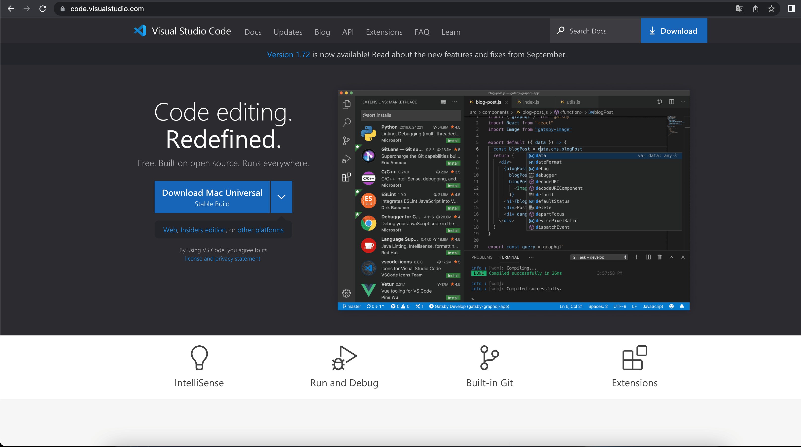
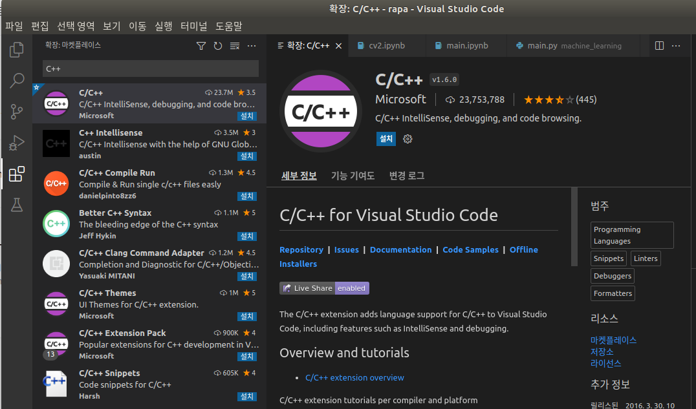
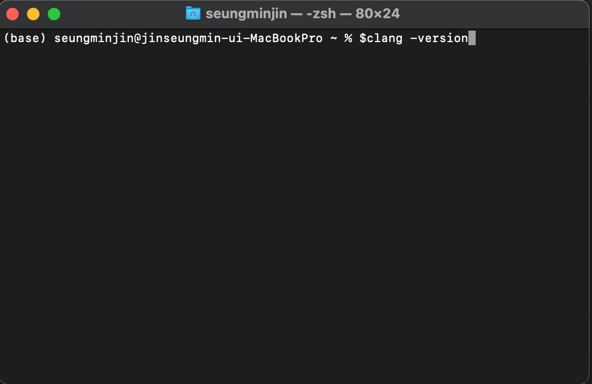

Visual Studio Code (VSCode) 가 설치되어있다면 프로그램 내 세팅 칸으로 이동해주세요.
프로그램다운로드
1. https://code.visualstudio.com/ 를 클릭해 최신버전 VScode를 설치한다.

2. 다운받은 설치파일을 연다.
프로그램 내 세팅
(맥 vs코드에서는 컴파일러가 기본적으로 제공되지 않기 때문에 직접 설치해야 한다)
3. shift + cmd + X 를 눌러 익스텐션 검색창에 진입한 후 검색창에 C++을 입력해 맨 위에 있는 C/C++이라고 쓰여있는 C++ extention을 설치한다.

(위의 단계를 완료했으면 Clang이라는 컴파일러 프론트엔드를 다운받아야 한다)
4.우선 Clang이 이미 설치되어 있는지 확인하기 위해 터미널을 실행해 $ clang –version을 입력하여 설치를 확인해준다.

5. 만약, 설치되어 있지 않다면 $ xcode-select – install을 입력하 clang을 다운받는다.
6. C++ 프로젝트를 진행할 폴더를 생성한 후 vs코드로 돌아가 생성한 폴더에 새로운 파일을 생성하고 아래 코트를 복붙 + 저장한다 (파일명.cpp)
#include
Int main()
{
printf(“HelloWorld”);
return 0 ;
}
7. 이제 tasks.json 파일을 생성 후 빌드할 것이다. 우선 터미널에 들어가 Configure Default Build Task로 들어가 준다 C/C++ clang++ build active file을 선택해 준다 .
8.tasks.jason파일이 생성되면 아래 코드를 복붙한다.
"version": "2.0.0",
"tasks": [
{
"type": "shell",
"label": "C bulid for clang",
"command": "clang",
"args": [
"-g",
"${file}",
"-o",
"${fileDirname}/${fileBasenameNoExtension}"
],
"options": {
"cwd": "${workspaceRoot}"
},
"presentation": {
"clear": true
},
"group": {
"kind": "build",
"isDefault": true
},
"problemMatcher": []
},
{
"type": "shell",
"label": "C++ bulid for clang++",
"command": "clang++",
"args": [
"-g",
"${file}",
"-o",
"${fileDirname}/${fileBasenameNoExtension}"
],
"options": {
"cwd": "${workspaceRoot}"
},
"presentation": {
"clear": true
},
"group": {
"kind": "build",
"isDefault": true
},
"problemMatcher": []
},
{
"type": "shell",
"label": "execute",
"command": "${fileDirname}/${fileBasenameNoExtension}",
"group": "test",
"presentation": {
"clear": true
}
}
]
}
7. tasks.jason파일을 cmd + shift + b 를 눌러 빌드한 후 마켓플레이스에서 codelldb 익스텐션을 설치한다 .
8. launch.json 파일을 생성한 후 아래 코드를 복붙한다 .
"version": "0.2.0",
"configurations": [
{
"name": "clang++ - Build and debug active file",
"type": "lldb",
"request": "launch",
"program": "${fileDirname}/${fileBasenameNoExtension}",
"args": [],
"stopAtEntry": true,
"cwd": "${workspaceFolder}",
"environment": [],
"externalConsole": false,
"MIMode": "lldb",
"preLaunchTask":"clang++ build active file"
}
오류가 발생하셨나요?